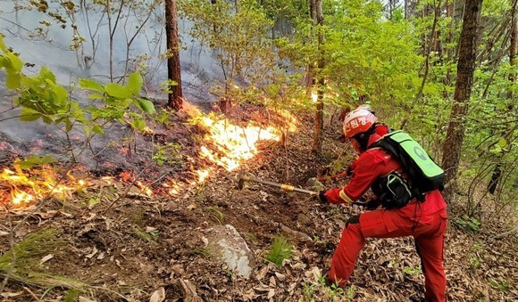

산불진화용드론에 대한 설명
Drone
산불진화용드론은 산림청에서 산불로 인한 피해를 막기 위해 개발한 드론이다.
산불진화용드론은 산불이 일어났을 경우 많은 역할을 하고있다. 사람들을 대피시키기도 하고 때로는 직접 불을 끄는 역할도 담당한다.
또한 산불이 일어났을 때 경로 예측 뿐 아니라 피해 범위까지 예측할 수 있다.
이 드론이 개발된 이유는 지금까지 많은 대형 산불이 발생했었는데 산불이 크게 번지면 대처하는 힘이 떨어진다.
새벽이나 밤이 되면 사람이 직접 운전해야 하는 소방헬기는 안전상의 이유로 비행이 어려워지고 인력 투입도 쉽지 않다.
그러면 이것들을 대처할 수 있는 힘을 갖추어야 하는데 그에 대한 대안으로 산불 진화용 드론이 채택된 것 이다.
그래서 이 드론을 이용해서 많은 피해가 감소되기를 기대하고 있다.
드론 설명
- 2021년에 개발이 됨.
- 큰 산불들을 겪고 난 이후부터 드론에 대한 필요도 높아짐.
- 산불 진화 말고 여러 다용도로 사용가능.
- 산림청과 환경부가 큰 산불으로 인한 피해를 줄이기 위해 만들었다.
- 불을 끌 수도 있지만 드론의 다양한 카메라들을 부착함으로써 더욱 실용도 있게 만들어짐.
- 이 드론의 개발로 인해 소방드론이 가동되지 못 할때 힘을 쓰고자 한다.
드론 역할
| 드론 역할 | |
|---|---|
|  | 산불 진화 일단 기본적으로 산불을 진화하는데 쓰인다. 드론의 진화방법은 두 가지로 나눌 수 있다. 드론은 분말 가루로 진화하는 경우가 있고 물로 진화하는 경우가 있다 드론은 분말 가루를 이용하여 상공에서 분말가루를 뿌려서 진화할 수가 있고 직접 물을 분사시켜서 진화하는 경우도 볼 수 있다. |
| 산불의 관한 정보 예측 드론은 산불이 언제 어느속도로 어디에 도달할 지 예측할 수 있다. 드론은 모든 정보들을 조합한 후 대피 명령도 내릴 수 있다. 그리고 드론은 이런 정보들을 소방서로 전달함으로써 미리 대처할 수 있다. 드론의 이런 노력들로 인해서 많은 피해를 줄일 수 있다. |
 |
드론 실제 활용 시간
| 년도 | 시간 |
|---|---|
| 2018 | 65시간 |
| 2019 | 116시간 |
| 2020 | 225시간 |
| 2021 | 373시간 |
| 2022 | 468시간 |